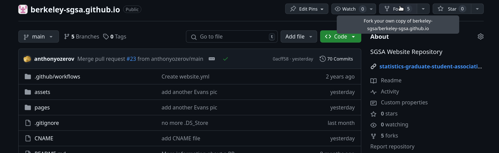
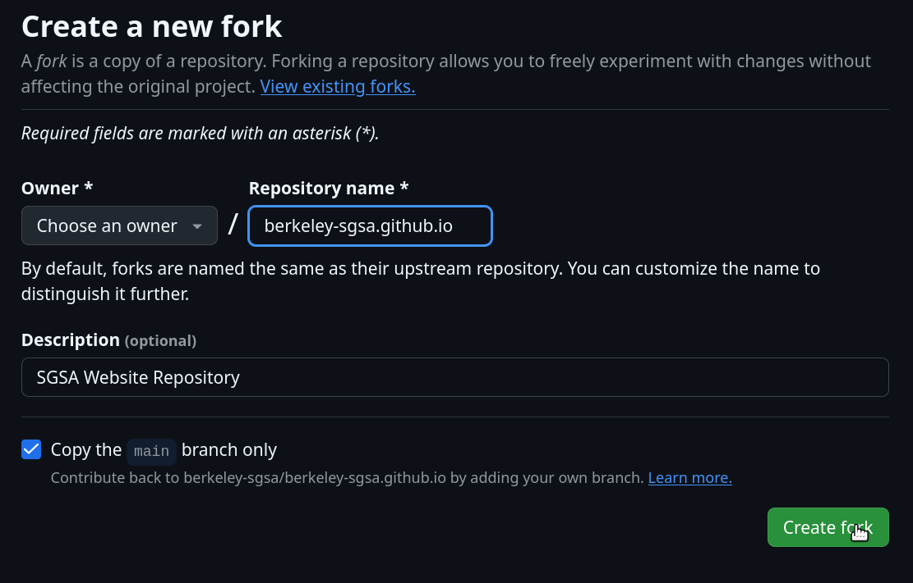
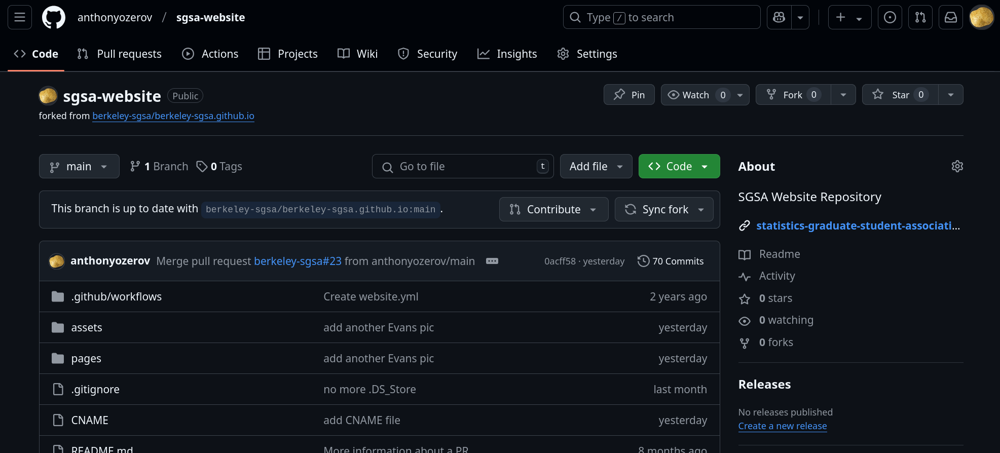
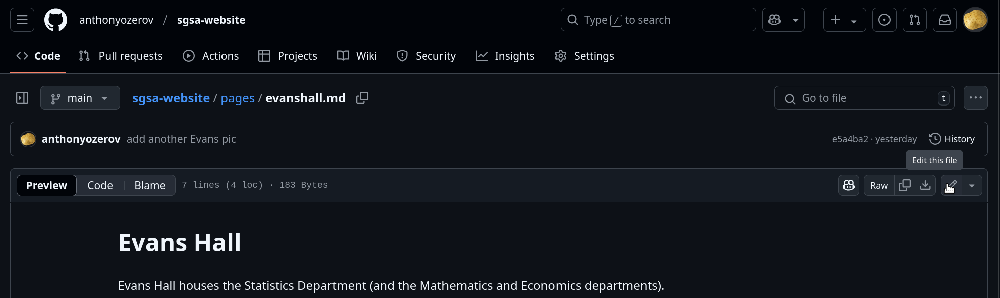
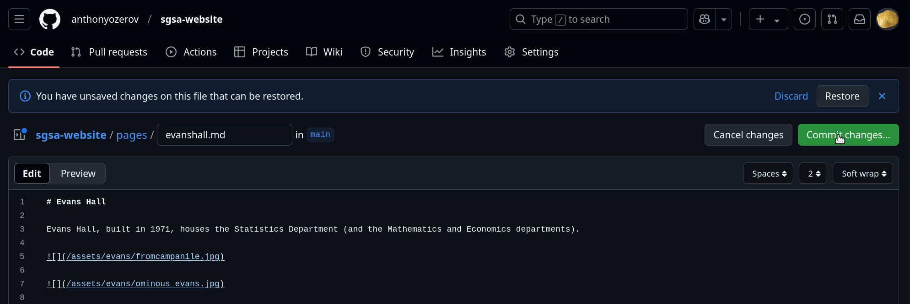
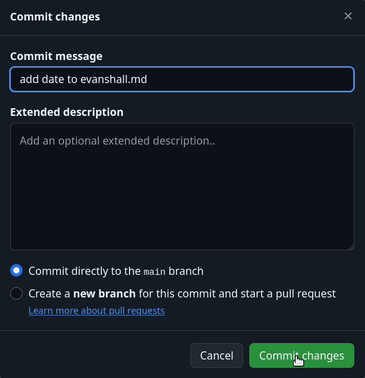
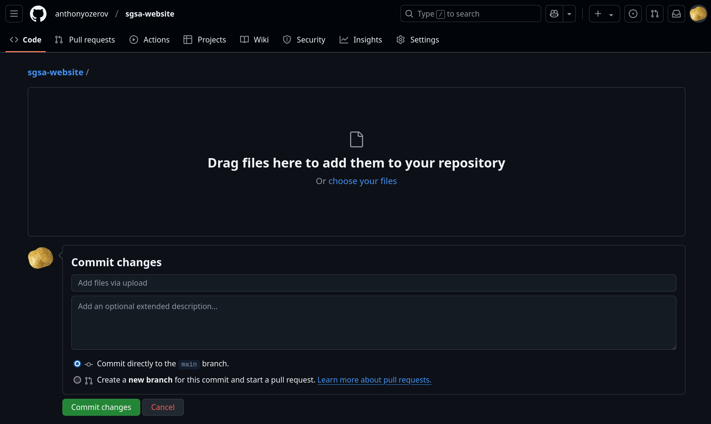
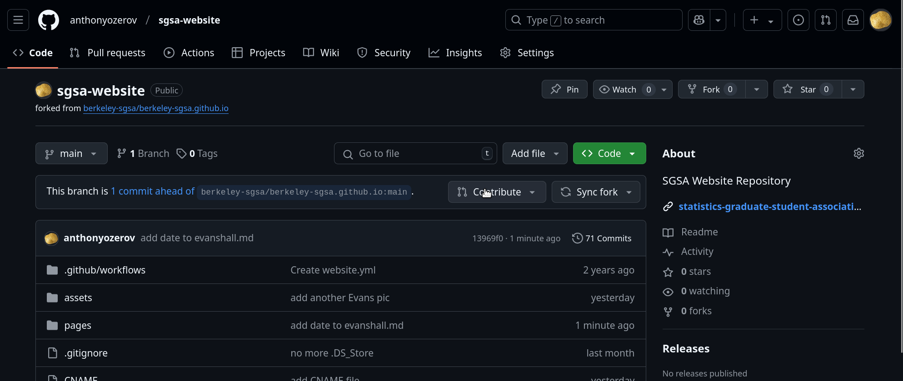
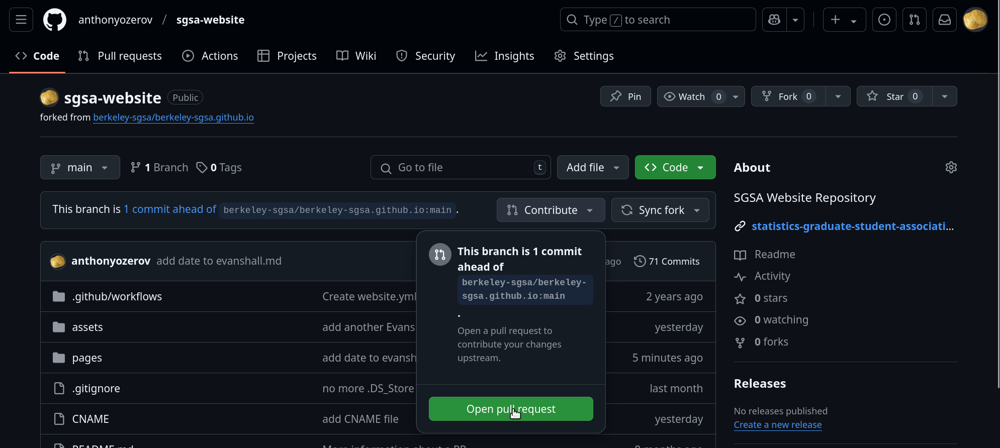
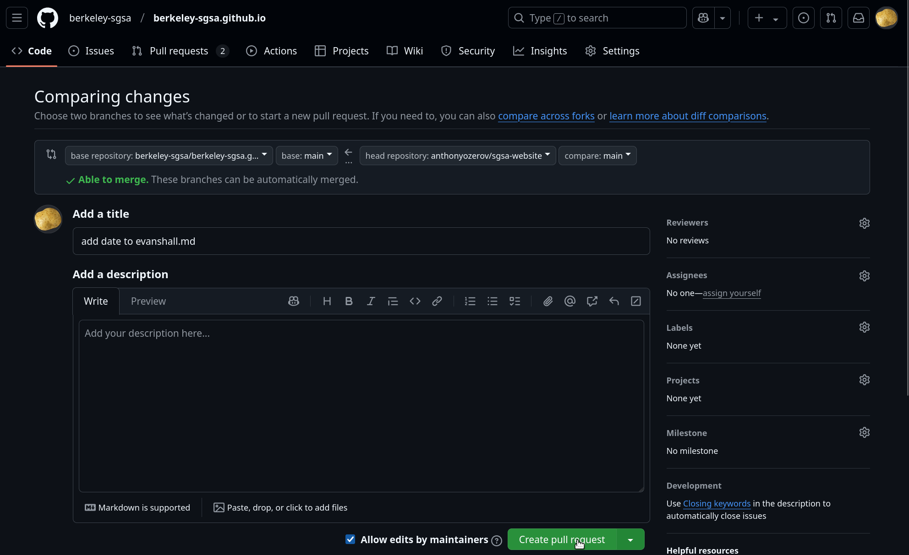

Repository for SGSA Website#
This repository hosts the SGSA website. Everyone is welcome to contribute to this website by contributing with a pull request (PR). The next section introduces how to contribute to the repository. If you’ve never done this before, it’s easy!
The path to PR (jan 2025)#
So you’ve decided to propose a change to the website! Ultimately, you need to make a PR, containing your changes, for the SGSA Website Committee to approve or deny. Here’s how you go about that.
If you’ve never proposed a change before, make a fork of this repo.
To do this, on this repo’s home page, click the
Forkbutton on the upper right (see screenshot). Name it whatever you want! (In the screenshots we called itsgsa_website.)If you have previously forked the repo, then before making a new change, first click the
Sync Forkbutton on your forked repo’s home page.
On your fork, you can add, upload, and edit files. All pages are stored as markdown files in the
pagesdirectory, with.mdextension; all images and other files are stored inassets.
The simplest way to do this is directly on Github! To add or upload a new file, click the
Add Filebutton on the upper right of this repo (it might look like a+for you). To edit a markdown file, navigate to it in the file explorer, and click the pencil icon on the upper right to begin edits. When you’re done, click the greenCommit Changesbutton and write a commit message. (See multiple screenshots). If you do it this way, your changes are automatically updated on Github.If you’re making substantial changes, you might prefer to clone your fork to your PC, work locally, and then push your changes back to your fork on Github.
Once your changes are updated on your fork on Github, it’s time to make the pull request! At your fork, click the
Contributebutton—it probably says it’s ahead by one or more commits—thenOpen pull request, andCreate Pull Request(See multiple screenshots).
If Website Committee updated the website while you’re working, then it won’t simply say that you’re ahead commits, but also that you’re behind. You need to
Sync Forkagain, and get the up-to-date website, before making your pull request.
         
Continuous integration#
This repository has a workflow implemented that automatically deploys the website. Every new commit message to the main branch of this repository will trigger the action to deploy the website with the changes from the last commit.
Contact#
If you have any questions or want to reach out, feel free to send us an email to email.